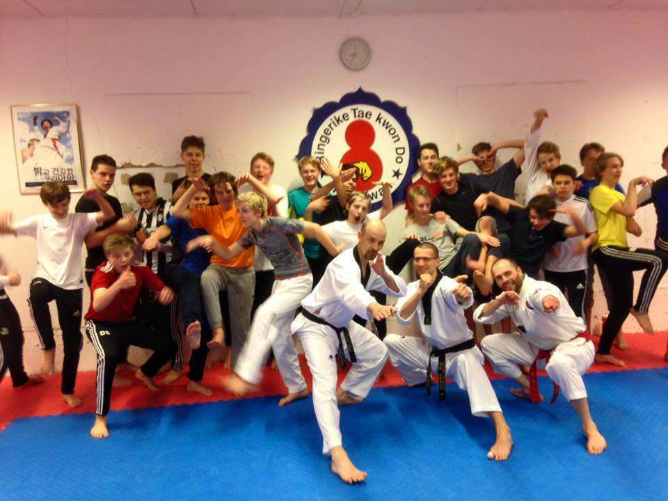

Innlegg
Vi tar imot nybegynnere.

Ringerike TKD klubb har plass til flere medlemmer. Bli med og tren i en klubb hvor ingen må sitte på benken. Vi har ledig plass på alle våre partier. Vi håper spesielt å få flere medlemmer i ungdoms og voksen alder. Vi har et godt og inkluderende miljø med meget erfarne instruktører. Vi starter opp sesongen 15.august. Vi tar imot nybegynnere løpende. Ta kontakt!
- Tiger: 1-3 klasse.
- Barn. 4 klasse og eldre.
- Ungdom voksen: Ungdomskole alder og oppover.
- Eget treningsdag for mønster.
- Egen treningsdag for kamp.
- Medlemmer som er 16 år eller eldre kan også trene i Hønefoss BJJ.